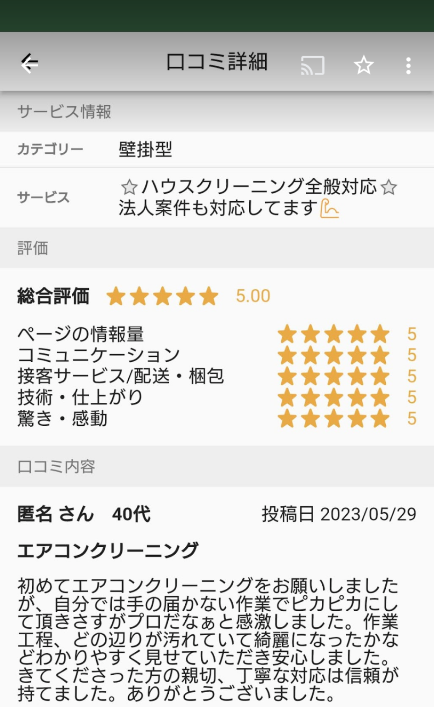

2023年6月12日 夏のエアコンクリーニング、エアコン内部洗浄クリーニングのリクエスト続々来てます!  エアコン内部洗浄クリーニングのご依頼が大変沢山来ております。お客様にエアコンクリーニングの高評価を頂いております。エアコンから酸っぱいにおいがする、エアコンから水が垂れて来ている、エアコンのカビ汚れが目に見える、エアコンがカビ臭いなど、エアコンのご使用でお困りの状況がございましたら、ぜひご連絡ください!宜しくお願いいたします!